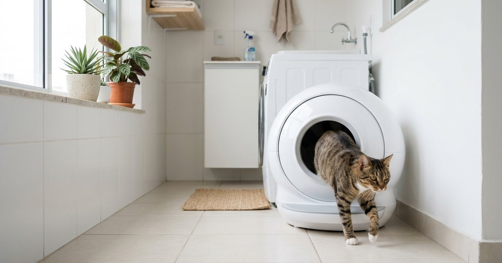
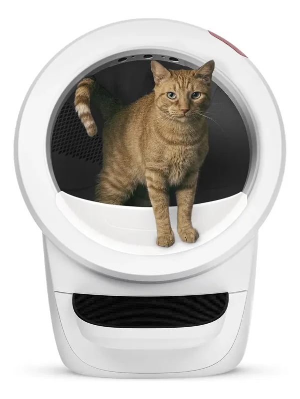
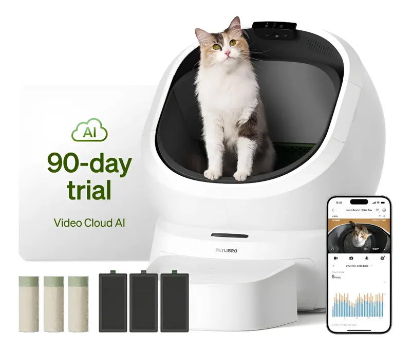
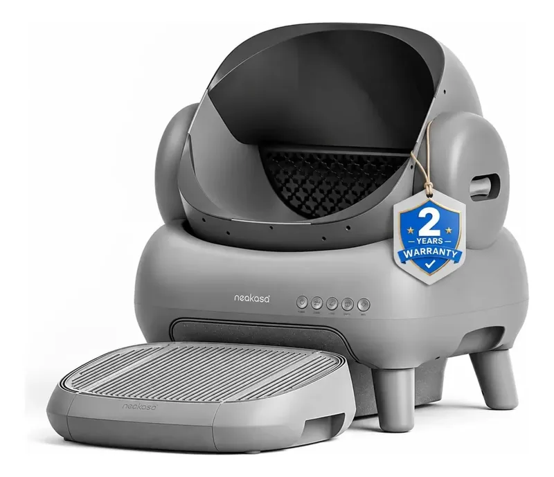
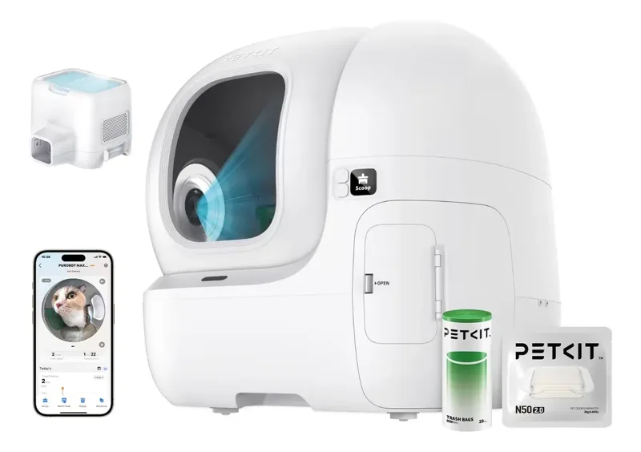
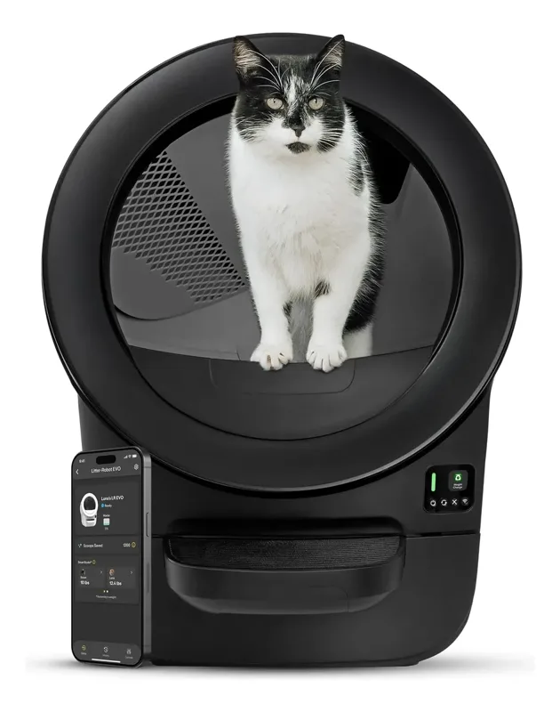

Melhor Caixa de Areia Automática para Gatos em 2026: 5 Modelos Comparados

Este post contém links de afiliado. Podemos receber uma comissão em compras feitas através deles, sem custo adicional para você.
Limpar a caixa de areia todo dia é a parte menos divertida de ter gato, e com dois ou três gatos ela vira tarefa de duas vezes por dia. A melhor caixa de areia automática para gatos peneira a areia sozinha depois de cada visita e guarda os torrões numa gaveta fechada, que você esvazia a cada uma ou duas semanas. Comparamos os 5 modelos premium à venda no Mercado Livre em 27/11/2026 (semana de Black Friday): ficha técnica do fabricante, preço, quantos gatos cada um aguenta, qual areia aceita e o que muda por serem importados.
Resposta curta: para a maioria das casas, o Litter-Robot 4 é a melhor escolha: aguenta até 4 gatos de 1,4 a 11,3 kg e tem mais de 14 mil avaliações no site da Whisker (nota 4,5). Se o orçamento é o limite, a Neakasa M1 Plus custa R$ 2.451 a menos e aceita gatos de até 15 kg. Para acompanhar cada gato pelo celular, a Petlibro Luma tem câmera com reconhecimento de até 10 gatos.
Quer ver o preço agora? Litter-Robot 4 no Mercado Livre, 10x sem juros e frete grátis.Link de afiliado — sem custo extra para você.
Ver preço no Mercado Livre →- Melhor no geral: Whisker Litter-Robot 4 (R$ 6.340, até 4 gatos) Ver preço
- Melhor custo-benefício: Neakasa M1 Plus (R$ 3.889, aberta, gato de até 15 kg) Ver preço
- Melhor com câmera e IA: Petlibro Luma (R$ 4.707, reconhece até 10 gatos) Ver preço
- Para esvaziar menos vezes: Petkit Purobot Max Pro (R$ 4.261, gaveta de 8 L) Ver preço
- Para apartamento com 1 ou 2 gatos: Litter-Robot Evo (R$ 5.220, 21% off) Ver preço
Antes de tudo: os 5 são importados dos EUA. Todos aparecem no Mercado Livre como compra internacional, com frete grátis. Isso significa prazo de entrega maior que o de um produto nacional, possível cobrança de tributos de importação no checkout e garantia dada pelo fabricante lá fora, sem assistência técnica oficial no Brasil. Explicamos cada ponto no guia de compra.
Comparativo: 5 Caixas de Areia Automáticas
Preços consultados no Mercado Livre em 27/11/2026. Preços sujeitos a alteração — confira o valor atual no botão. Medidas convertidas das fichas dos fabricantes (polegadas e libras).
| Modelo | Gatos | Peso do gato | Gaveta (1 gato) | Câmera | Preço | |
|---|---|---|---|---|---|---|
| Litter-Robot 4 | Até 4 | 1,4 a 11,3 kg | ≈ 8 dias | Não | R$ 6.340 | Ver preço |
| Petlibro Luma | Reconhece até 10 | 1 a 10 kg | 11 L (7 dias para 2 gatos) | Sim, com IA | R$ 4.707 | Ver preço |
| Neakasa M1 Plus | Não informado | 1 a 15 kg | 11,23 L (até 14 dias) | Não | R$ 3.889 | Ver preço |
| Petkit Purobot Max Pro | Reconhece até 15 | 1,5 a 10 kg | 8 L (até 17 dias) | Sim, 1080p | R$ 4.261 | Ver preço |
| Litter-Robot Evo | Até 2 | 1,4 a 8,6 kg | ≈ 7 dias | Não | R$ 5.220 | Ver preço |
Como Funciona uma Caixa de Areia Autolimpante
Todas as cinco seguem a mesma lógica. Sensores de peso (e, em alguns modelos, infravermelho, laser ou câmera) percebem quando o gato entra e sai. Depois de um intervalo de espera, o tambor gira devagar: a areia limpa passa por uma peneira e volta ao lugar, e os torrões de xixi e as fezes caem numa gaveta embaixo, fechada e com filtro de odor. Um app no celular mostra as visitas, avisa quando a gaveta está cheia e permite mudar o tempo de espera.
Duas consequências práticas. Primeiro, a areia precisa ser aglomerante: é o torrão firme que a peneira consegue separar. Areia de sílica, de madeira em pellets ou granulada que não forma torrão não funciona nos modelos desta lista. Segundo, o registro de visitas vira um dado de saúde: um gato que passa a ir muito mais ao banheiro, ou para de ir, precisa de veterinário. Os apps avisam disso, mas não fazem diagnóstico.
As 5 Caixas de Areia Automáticas, uma a uma
Como montamos a lista: não testamos os produtos. Analisamos as especificações e os manuais publicados pelos fabricantes, as notas de compradores nos sites oficiais e os anúncios do Mercado Livre (preço, parcelamento, frete e origem) em 27/11/2026. O que o fabricante não informa aparece como "não informado pelo fabricante".
Whisker Litter-Robot 4
Para quem é: casas com 2 a 4 gatos, ou com um gato grande, que querem o modelo mais estabelecido do mercado.

O Litter-Robot é a caixa automática mais conhecida dos EUA, e a quarta geração é o modelo topo de linha que a Whisker ainda vende como "multi-cat". O globo gira para peneirar a areia e despeja os resíduos numa gaveta embaixo; a Whisker diz que, com um gato, dá para esvaziar a gaveta só a cada 8 dias. A entrada é grande, com cerca de 40 x 40 cm, e o fabricante indica o aparelho para gatos de 1,4 a 11,3 kg, até quatro por casa.
O diferencial em relação aos concorrentes mais baratos está nos sensores: além da balança (SmartScale), que identifica cada gato pelo peso, ele usa sensores a laser (OmniSense) que medem o nível de areia e de resíduos na gaveta em qualquer ponto, não só quando está cheia. O app Whisker mostra o histórico de visitas e o peso de cada gato. O ciclo de limpeza, que a marca chama de QuietSift, é descrito como silencioso, mas a Whisker não publica o nível de ruído em decibéis.
Os pontos de atenção são o preço, o maior da lista, a areia (a Whisker recomenda argila aglomerante e avisa que areias vegetais, não aglomerantes, de jornal ou de pellets não funcionam) e o Wi-Fi, que precisa ser de 2,4 GHz. No site da Whisker, ele tem nota 4,5 de 5 em 14.111 avaliações, que podem incluir avaliações de outros sites da marca.
| Preço | R$ 6.340 em 27/11/2026, 10x de R$ 634,01 sem juros; R$ 6.320 com cupom no anúncio |
|---|---|
| Medidas | 56 x 69 cm de base, 75 cm de altura; entrada de 40 x 40 cm |
| Peso | 10,9 kg vazio |
| Gatos | Até 4, de 1,4 a 11,3 kg |
| Gaveta | Esvaziar a cada ≈ 8 dias com 1 gato (capacidade em litros não informada) |
| Sensores | Laser OmniSense (nível de areia e de resíduos) e balança SmartScale |
| Areia | Argila aglomerante |
| Energia | Fonte de 15 V DC (tensão de entrada não informada pelo fabricante) |
| Conectividade | Wi-Fi 2,4 GHz, app Whisker |
| Ruído | Não informado pelo fabricante |
| Garantia | 1 ano (fabricante, EUA) |
| Na caixa | Cerca, degrau, filtro de carvão e 5 sacos para a gaveta |
| Origem | Importado (EUA), frete grátis |
| Avaliações | 4,5 de 5 em 14.111 avaliações no site da Whisker |
- Até 4 gatos e até 11,3 kg
- Sensores medem nível de areia e de resíduos, não só "gaveta cheia"
- Maior base de avaliações da lista
- 10x sem juros no anúncio
- O mais caro da lista
- Só argila aglomerante; Wi-Fi apenas 2,4 GHz
- Garantia de só 1 ano e sem assistência oficial no Brasil
🐱 Litter-Robot 4: veja o preço atual no Mercado Livre.
Ver preço atual no Mercado LivrePetlibro Luma (com câmera e IA)
Para quem é: quem tem vários gatos e quer saber, pelo celular, qual deles usou a caixa e como.

A Luma junta a caixa autolimpante com uma câmera e reconhecimento por IA: o app identifica até 10 gatos e registra quem entrou, quando e por quanto tempo. É a maior entrada da lista (44,2 cm) e a faixa de peso vai de 1 a 10 kg. A gaveta tem 11 litros, que segundo a Petlibro seguram até 7 dias de resíduos de 2 gatos.
Para controle de cheiro, há ventilador com filtro de carvão ativado e duas velocidades, e o fabricante informa ruído de 35 a 47 dB, conforme a velocidade do ventilador. É um dos poucos da lista com Wi-Fi de 2,4 e de 5 GHz e com fonte de entrada 110–240 V informada pelo fabricante, o que facilita no Brasil (o plugue pode ser americano; confira no anúncio). Ela aceita areia aglomerante, de tofu e mista, mas não serve em carpete: pede piso duro e plano.
Atenção à assinatura: a caixa funciona sem ela e a visualização ao vivo é gratuita, mas gravações, histórico em vídeo e a análise avançada de fezes (que alerta, por exemplo, para fezes moles) ficam no plano Video Cloud AI, cobrado em dólar (a partir de US$ 95,99 por ano no site da Petlibro). Garantia de 24 meses do fabricante. No site da Petlibro, a nota mostrada é 4,8; o número de avaliações não aparece.
| Preço | R$ 4.707 (de R$ 4.970) em 27/11/2026, 10x de R$ 470,75 sem juros |
|---|---|
| Medidas | 59,2 x 57,3 x 71,4 cm; entrada de 44,2 cm |
| Peso | 15 kg |
| Gatos | De 1 a 10 kg; reconhece até 10 gatos |
| Gaveta | 11 L, até 7 dias para 2 gatos |
| Sensores | Câmera, infravermelho e peso; 4 checagens de segurança antes de limpar |
| Areia | Aglomerante, tofu e mista (não serve sílica, pinus nem areia muito fina) |
| Energia | Fonte 110–240 V AC, saída 12 V / 5 A |
| Conectividade | Wi-Fi 2,4 e 5 GHz, app Petlibro |
| Ruído | 35 a 47 dB |
| Garantia | 24 meses (fabricante) |
| Na caixa | Caixa, degrau, 2 filtros, desodorizador de carvão, 15 sacos, fonte, guia e manual |
| Origem | Importado (EUA), frete grátis |
| Avaliações | Nota 4,8 no site da Petlibro (número de avaliações não informado) |
- Identifica cada gato por câmera, até 10
- Maior entrada da lista e fonte 110–240 V
- Wi-Fi 2,4 e 5 GHz; garantia de 24 meses
- 10x sem juros
- Vídeo gravado e análise avançada exigem assinatura em dólar
- A mais pesada (15 kg) e não funciona em carpete
- Câmera dentro de casa: vale rever as configurações de privacidade
📷 Petlibro Luma: veja o preço atual no Mercado Livre.
Ver preço atual no Mercado LivreNeakasa M1 Plus (aberta)
Para quem é: gatos grandes ou desconfiados, que estranham caixa fechada, e quem quer a automática mais barata da lista.

A Neakasa M1 Plus resolve a maior objeção à caixa automática: o gato que tem medo de entrar num globo fechado. Ela é aberta em cima, e a entrada tem 35,2 cm de altura. A faixa de peso é a mais ampla da lista, de 1 kg a cerca de 15 kg, o que faz dela a opção natural para Maine Coon e outros gatos grandes.
A gaveta é das maiores (11,23 L), e a Neakasa fala em até 14 dias com um gato. A areia ocupa 7,17 L. Em relação à M1 original, a versão Plus ganhou 6 pares de sensores infravermelhos (antes eram 5 fixos), sistema de giro antiesmagamento e uma vedação que, segundo a marca, segura melhor o cheiro e evita vazamento de xixi. Também há 4 sensores de peso e app para acompanhar visitas e nível de areia. O ruído informado é de até 50 dB, o maior teto da lista.
O que falta: a Neakasa não informa as dimensões externas nem a tensão de entrada da fonte, então confira no anúncio antes de comprar. Para areia, ela indica aglomerante de bentonita ou mineral, de grão até 3 mm. A garantia no site é de 2 anos para compras feitas lá a partir de 1º/1/2026 (o padrão é 1 ano); não fica claro se vale para a compra pelo Mercado Livre. No site da Neakasa, a nota é 4,7 em 1.110 avaliações, numa página que também vende a M1 original.
| Preço | R$ 3.889 em 27/11/2026, 10x de R$ 388,90 sem juros |
|---|---|
| Medidas | Não informadas pelo fabricante; entrada com 35,2 cm de altura |
| Peso | 10,35 kg |
| Gatos | De 1 a cerca de 15 kg; número máximo não informado |
| Gaveta | 11,23 L, até 14 dias com 1 gato |
| Areia | 7,17 L; aglomerante (bentonita ou mineral) |
| Sensores | 6 pares de infravermelho e 4 de peso |
| Energia | Não informada pelo fabricante |
| Conectividade | App Neakasa (Android e iOS) |
| Ruído | Até 50 dB |
| Garantia | 1 ano padrão; 2 anos em compras no site a partir de 1º/1/2026 |
| Origem | Importado (EUA), frete grátis |
| Avaliações | 4,7 de 5 em 1.110 avaliações no site da Neakasa (página compartilhada com a M1) |
- A mais barata da lista, 10x sem juros
- Aberta: menos estranhamento para gato desconfiado
- Aceita gatos de até cerca de 15 kg
- Gaveta de 11,23 L, até 14 dias
- Sem dimensões externas e sem tensão da fonte na ficha
- Teto de ruído mais alto (50 dB)
- Aberta, segura menos o cheiro e a areia espalhada que um globo fechado
💰 Neakasa M1 Plus: veja o preço atual no Mercado Livre.
Ver preço atual no Mercado LivrePetkit Purobot Max Pro (com câmera)
Para quem é: quem viaja ou não quer mexer na gaveta toda semana e gosta de acompanhar o gato pela câmera.

A Purobot Max Pro é a caixa com câmera da Petkit. O anúncio no Mercado Livre cita câmera de 210° com IA, que corresponde à ficha da Purobot Max Pro 2, a versão que a Petkit vende hoje no site oficial. O título do anúncio não diz a geração, então confira esse detalhe antes de comprar. Os dados abaixo são da ficha oficial da Max Pro 2.
O ponto forte é a autonomia: a lixeira de 8 litros fica lacrada e, segundo a Petkit, dispensa esvaziar por até 17 dias com um gato, o maior número da lista. A câmera grava em 1080p com ângulo de 210°, tem microfone e reconhece até 15 gatos por rosto e peso; o app também alerta para fezes moles, miados e 24 horas sem uso, e informa pH da urina. O controle de cheiro é duplo (módulos N50 na lixeira e N60 no tambor), e o ruído declarado é de 35 dB, o mais baixo informado entre os cinco.
Ela aceita areia aglomerante de argila, de tofu e mista, com duas peneiras diferentes para grão grosso e fino. O porém é a entrada: 26,7 x 27,3 cm, bem menor que a dos outros modelos, o que pode incomodar gatos grandes, apesar do limite de 10 kg. O Wi-Fi funciona em 2,4 e 5 GHz, o consumo é de 24 W e a garantia é de 2 anos. A tensão de entrada da fonte não é informada. No site da Petkit, a Max Pro 2 soma 223 avaliações, 95% delas com 4 ou 5 estrelas.
| Preço | R$ 4.261 (de R$ 5.133, 17% off) em 27/11/2026; 12x de R$ 409,56 (com juros) |
|---|---|
| Medidas | 65,7 x 53,8 x 60,3 cm; entrada de 26,7 x 27,3 cm; tambor de 76 L |
| Peso | 11 kg |
| Gatos | De 1,5 a 10 kg; reconhece até 15 gatos |
| Gaveta | 8 L lacrada, até 17 dias com 1 gato |
| Câmera | 1080p, 210°, microfone; pode ser desligada no app |
| Areia | Argila aglomerante, tofu e mista (2 peneiras) |
| Energia | Entrada 12 V / 2 A, 24 W (tensão da fonte não informada) |
| Conectividade | Wi-Fi 2,4 e 5 GHz, app PETKIT |
| Ruído | 35 dB |
| Garantia | 2 anos (fabricante) |
| Origem | Importado (EUA), frete grátis |
| Avaliações | 223 avaliações no site da Petkit (Max Pro 2), 95% com 4 ou 5 estrelas |
- Lixeira de 8 L, até 17 dias sem esvaziar
- 35 dB, o mais silencioso declarado
- Câmera 1080p e alertas de saúde no app
- Garantia de 2 anos
- Entrada pequena para gato grande
- Parcelamento com juros no anúncio
- Geração do produto (Max Pro ou Max Pro 2) não fica clara no título
🗑️ Petkit Purobot Max Pro: veja o preço atual no Mercado Livre.
Ver preço atual no Mercado LivreWhisker Litter-Robot Evo
Para quem é: quem quer um Litter-Robot, mas tem até dois gatos de porte médio e pouco espaço.

A própria Whisker define o Evo como uma versão mais compacta e simples do Litter-Robot 4, para casas com um ou dois gatos e preço menor. Ele ocupa 52 x 62 cm de chão contra 56 x 69 cm do LR4, tem 70 cm de altura e pesa 9,8 kg. A entrada cai para 37,7 cm, e o limite de peso do gato para 8,6 kg.
O que se perde: em vez dos sensores a laser do LR4, o Evo usa só sensores de peso, e a gaveta avisa apenas quando está cheia, sem mostrar o nível. Com um gato, a Whisker estima esvaziar a cada 7 dias. O que se ganha: tela LCD e uso em qualquer tipo de piso, inclusive carpete, sem acessório extra. Areia (argila aglomerante), Wi-Fi (só 2,4 GHz), app e garantia (1 ano) são os mesmos do LR4.
Por que ficou em último? Por R$ 5.220 ele custa mais que a Petlibro Luma e a Petkit, que oferecem câmera, gaveta maior e garantia de 2 anos. Mesmo com 21% de desconto, só compensa para quem faz questão do ecossistema Whisker. É o modelo mais novo da lista, com 98 avaliações e nota 4,7 no site da marca.
| Preço | R$ 5.220 (de R$ 6.645, 21% off) em 27/11/2026; 12x de R$ 501,74 (com juros); R$ 5.200 com cupom |
|---|---|
| Medidas | 52 x 62 cm de base, 70 cm de altura; entrada de 37,7 x 37,7 cm |
| Peso | 9,8 kg vazio |
| Gatos | Até 2, de 1,4 a 8,6 kg |
| Gaveta | Esvaziar a cada ≈ 7 dias com 1 gato; avisa só quando cheia |
| Sensores | Peso (SmartScale) |
| Areia | Argila aglomerante |
| Energia | 15 V DC (tensão de entrada não informada) |
| Conectividade | Wi-Fi 2,4 GHz, app Whisker; tela LCD |
| Garantia | 1 ano (fabricante, EUA) |
| Na caixa | Cerca, filtro de carvão e 5 sacos para a gaveta |
| Origem | Importado (EUA), frete grátis |
| Avaliações | 4,7 de 5 em 98 avaliações no site da Whisker |
- Mais compacto que o LR4
- Funciona em carpete sem acessório
- 21% de desconto na Black Friday
- Só 2 gatos, até 8,6 kg
- Sem sensor de nível da gaveta e sem câmera
- Mais caro que concorrentes mais completos; parcelamento com juros
🏠 Litter-Robot Evo: veja o preço atual no Mercado Livre.
Ver preço atual no Mercado LivreGuia de Compra: Como Escolher a Caixa de Areia Automática
1. Número de gatos
Um gato só cabe em qualquer modelo da lista. Com dois, evite o Evo se planeja ter um terceiro. Com três ou quatro, o Litter-Robot 4 é o único com indicação explícita do fabricante para até 4 gatos; Petlibro e Petkit falam em reconhecer até 10 e 15 gatos, o que é limite do app, não de capacidade da gaveta. A recomendação comum entre veterinários de ter mais de uma caixa em casas com vários gatos continua valendo: a International Cat Care tem um bom guia sobre quantidade e posição das caixas.
2. Tamanho e peso do gato
Para gato grande (acima de 8 kg), olhe dois números: o limite de peso e o tamanho da entrada. A Neakasa M1 Plus vai até cerca de 15 kg e é aberta; o Litter-Robot 4 vai até 11,3 kg com entrada de 40 cm. A Petkit aceita até 10 kg, mas tem a entrada mais estreita (26,7 cm de largura). No outro extremo, nenhuma deve funcionar em modo automático com filhotes abaixo de 1 a 1,5 kg: todos têm modo manual para isso.
3. Qual areia usar
Todas exigem areia que forme torrão. No Brasil, a mais fácil de achar é a bentonita aglomerante, aceita pelos cinco. Areia de tofu e mista serve na Petlibro e na Petkit. Sílica, pellets de madeira e areias que não aglomeram não funcionam em nenhuma delas. Areia muito fina pode atravessar a peneira: a Petkit e a Neakasa informam o tamanho máximo de grão.
4. Ruído
Só três fabricantes publicam números: Petkit 35 dB, Petlibro 35 a 47 dB e Neakasa até 50 dB. Para comparar, 35 dB é nível de sussurro. A Whisker diz que o ciclo é silencioso, mas não informa decibéis. Se o gato é medroso, deixe a limpeza automática desligada nos primeiros dias e ligue aos poucos.
5. Custo de manutenção
Além da areia, conte com sacos para a gaveta e filtros de carvão (todos usam algum), e, nos modelos com câmera, a assinatura opcional para gravar vídeo. Como são importados, sacos e filtros originais costumam ser comprados também como importação. A vantagem: a peneira devolve a areia limpa ao tambor, então se descarta menos areia do que numa caixa comum.
6. Importado: prazo, imposto e garantia
Os cinco modelos chegam pela modalidade de compra internacional do Mercado Livre. Na prática:
- Prazo: maior que o de um produto com estoque no Brasil. A data estimada aparece no anúncio antes da compra.
- Imposto: compras internacionais podem ter imposto de importação e ICMS. Veja as regras na página da Receita Federal e confira o total no checkout antes de pagar.
- Garantia e assistência: a garantia é a do fabricante lá fora, e nenhuma das marcas tem assistência técnica oficial no Brasil anunciada. Se algo quebrar depois do prazo de devolução, o conserto pode depender de peças importadas.
- Energia e tomada: só a Petlibro informa fonte bivolt (110–240 V). Nas outras, pergunte ao vendedor antes de comprar se a fonte aceita a tensão da sua casa e qual é o plugue; versões americanas costumam vir com plugue dos EUA.
- Wi-Fi: o Litter-Robot só conecta em 2,4 GHz. Se o seu roteador separa as redes, use a de 2,4.
Prefere algo com envio nacional e assistência mais simples? As automáticas importadas são o topo de linha; se o seu foco é automatizar a rotina do gato com menos investimento, comece pelo comedouro automático para gatos e pelo bebedouro automático.
Comparativos Diretos
Litter-Robot 4 vs Petkit Purobot Max Pro
| Litter-Robot 4 | Petkit Purobot Max Pro | |
|---|---|---|
| Preço (27/11) | R$ 6.340, 10x sem juros | R$ 4.261, 12x com juros |
| Gatos / peso | Até 4, até 11,3 kg | Reconhece 15, até 10 kg |
| Entrada | 40 x 40 cm | 26,7 x 27,3 cm |
| Gaveta (1 gato) | ≈ 8 dias | Até 17 dias (8 L) |
| Câmera | Não | 1080p, 210° |
| Areia | Argila aglomerante | Argila, tofu e mista |
| Garantia | 1 ano | 2 anos |
Veredito: o Litter-Robot 4 é melhor para vários gatos e para gatos grandes, por causa da entrada larga e do limite de 11,3 kg. A Petkit custa R$ 2.079 a menos, tem câmera, garantia maior e esvazia menos vezes, mas a entrada estreita pode ser um problema para gatos de porte grande.
Litter-Robot 4 vs Litter-Robot Evo
O Evo é R$ 1.120 mais barato e menor, mas aguenta metade dos gatos (2 contra 4), tem limite de peso menor (8,6 contra 11,3 kg) e não mede o nível da gaveta. Se você tem um gato e pouco espaço, o Evo atende. Se há chance de ter mais gatos, a diferença de preço compensa no LR4.
Aberta (Neakasa) ou fechada (as outras)?
A caixa aberta é mais fácil de aceitar para gato desconfiado e para gato grande, e você vê o estado da areia de relance. A fechada segura melhor o cheiro e a areia que o gato espalha ao cavar. Se o seu gato hoje usa caixa sem tampa e é arisco, a Neakasa é a aposta mais segura.
Perguntas Frequentes
Caixa de areia automática vale a pena?
Vale para quem tem dois ou mais gatos, rotina corrida ou viaja com frequência, porque a caixa fica limpa entre as visitas e você só esvazia a gaveta a cada uma ou duas semanas. Para um gato só, com tutor que limpa todo dia, uma caixa comum resolve. Alguns gatos estranham o barulho e o movimento e precisam de adaptação.
Caixa de areia automática faz barulho?
Faz um ruído baixo durante a limpeza, que dura alguns minutos depois que o gato sai. Entre os fabricantes que informam, a Petkit declara 35 dB, a Petlibro de 35 a 47 dB e a Neakasa até 50 dB. A Whisker diz que o Litter-Robot é silencioso, mas não publica o valor em decibéis.
Qual areia usar na caixa de areia automática?
Areia aglomerante, que forma torrões firmes. A bentonita aglomerante, comum no Brasil, funciona nos cinco modelos desta lista. Areia de tofu e mista serve na Petlibro Luma e na Petkit. Sílica, pellets de madeira e areias que não aglomeram não funcionam, porque a peneira precisa separar o torrão da areia limpa.
Caixa de areia automática serve para vários gatos?
Sim, dentro do limite de cada modelo. O Litter-Robot 4 é indicado para até 4 gatos, e o Evo para até 2. Petlibro e Petkit reconhecem até 10 e 15 gatos pelo app, mas a gaveta enche mais rápido com mais gatos. Em casas com vários gatos, veterinários recomendam ter mais de uma caixa.
Qual caixa de areia automática é melhor para gato grande?
A Neakasa M1 Plus, que aceita gatos de até cerca de 15 kg e é aberta em cima. Entre as fechadas, o Litter-Robot 4 vai até 11,3 kg e tem entrada de 40 x 40 cm. A Petkit aceita até 10 kg, mas sua entrada de 26,7 cm de largura pode ser apertada para raças grandes como Maine Coon.
Onde comprar Litter-Robot no Brasil?
Em 27/11/2026, o Litter-Robot 4 e o Evo estavam à venda no Mercado Livre como compra internacional, com frete grátis e envio dos EUA. O LR4 custava R$ 6.340 em 10x sem juros, e o Evo R$ 5.220. Por ser importação, confira prazo, tributos no checkout e tipo de tomada antes de pagar.
A caixa de areia automática funciona sem Wi-Fi?
Sim. A limpeza automática depende dos sensores da própria caixa, não da internet. Sem Wi-Fi, você perde o app: histórico de visitas, peso do gato, aviso de gaveta cheia e câmera. O Litter-Robot exige rede de 2,4 GHz para conectar; Petlibro e Petkit aceitam 2,4 e 5 GHz.
Conclusão: Qual Comprar
- 2 a 4 gatos, ou gato grande em caixa fechada: Litter-Robot 4.
- Quer pagar menos ou tem gato desconfiado ou muito grande: Neakasa M1 Plus.
- Quer saber qual gato usou a caixa e como: Petlibro Luma.
- Viaja ou quer esvaziar a gaveta só a cada duas semanas: Petkit Purobot Max Pro.
- Um gato, pouco espaço e preferência pela Whisker: Litter-Robot Evo.
Os preços acima são da semana de Black Friday, com descontos reais de até 21% em relação ao preço anterior do anúncio. Vale lembrar que nenhuma caixa automática substitui olhar o gato: se o app mostrar mudança grande no número de visitas, procure o veterinário. Para vigiar o gato quando estiver fora, veja também nosso ranking de câmeras para monitorar pet e as ofertas de Black Friday pet.
Outros equipamentos premium que analisamos: o guia de produtos pet premium que valem o investimento, o melhor secador para pet shop, os equipamentos premium para aquário e os produtos pet de alto padrão.
Veja nossa política editorial e como verificamos as fontes citadas neste artigo. Fichas técnicas: Whisker, Petlibro, Petkit e Neakasa (sites oficiais, consultados em 27/11/2026).
🐾 Litter-Robot 4: a melhor caixa de areia automática para a maioria das casas.
Ver preço atual no Mercado LivreLink de afiliado: podemos receber uma comissão por compras feitas através deste link, sem custo adicional para você. Preços sujeitos a alteração — confira o valor atual no botão.